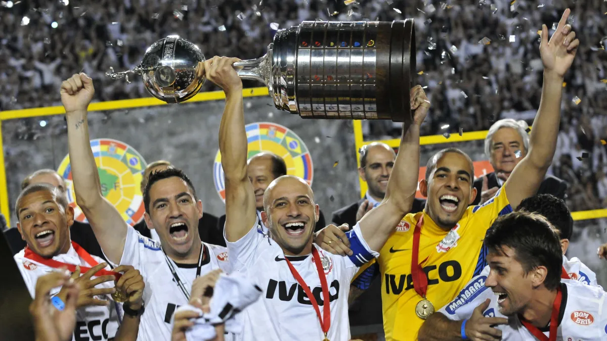
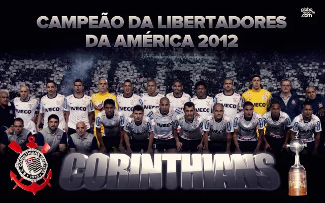

A conquista da Copa Libertadores 2012 foi um dos momentos mais importantes da história do Sport Club Corinthians Paulista. Depois de muitos anos tentando conquistar o principal torneio da América do Sul, o clube finalmente alcançou o título de forma histórica e invicta. A campanha foi marcada por muita organização defensiva, espírito de equipe e grandes atuações de jogadores como Emerson Sheik, Danilo, Paulinho e o goleiro Cássio.
Na final, o Corinthians enfrentou o Boca Juniors da Argentina. O primeiro jogo, disputado em Buenos Aires, terminou empatado por 1 a 1, com um gol importante de Romarinho nos minutos finais. A decisão ficou para o jogo de volta no estádio do Pacaembu, em São Paulo, diante de mais de 37 mil torcedores corinthianos. Na partida decisiva, o Corinthians fez uma grande atuação e venceu por 2 a 0, com dois gols de Emerson Sheik.
Com essa vitória, o clube conquistou sua primeira Libertadores da América e entrou definitivamente para a história do futebol sul-americano. Além disso, a campanha ficou marcada por um feito impressionante: o Corinthians foi campeão invicto, algo muito raro em competições desse nível.
